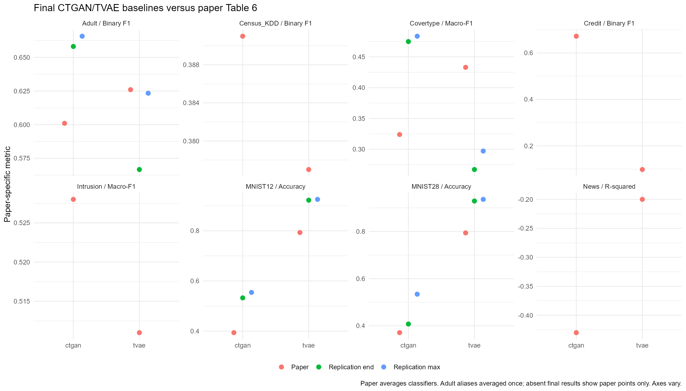
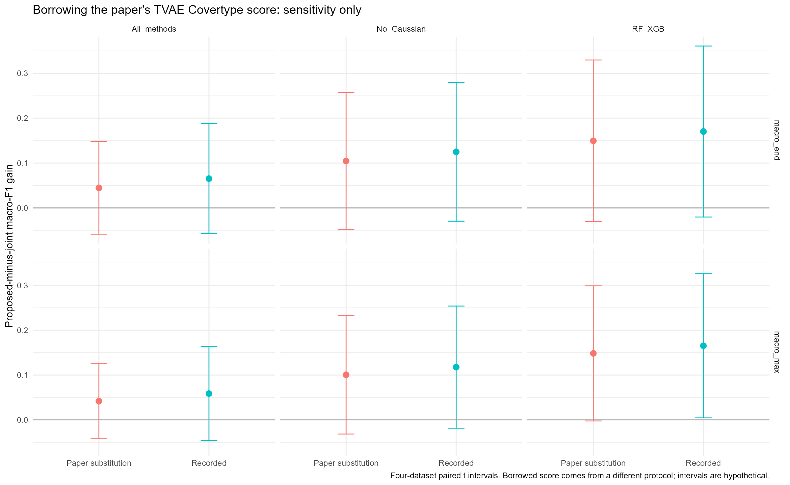
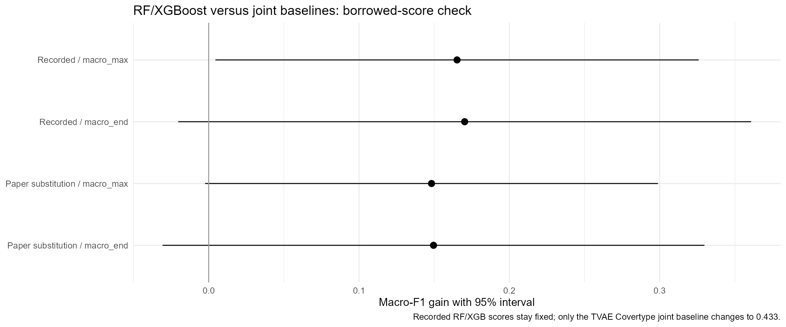

Adult counted once. Matching metrics, differing protocols. Missing final results remain missing. Paper-score substitution is hypothetical and is not a leakage-adjusted or corrected replication.
Paper Table 6 | Full analysis and limits
| dataset | method | metric | paper_score | endpoint | value | difference_from_paper |
|---|---|---|---|---|---|---|
| Adult | ctgan | Binary F1 | 0.6010 | end | 0.6581 | 0.0571 |
| Adult | ctgan | Binary F1 | 0.6010 | max | 0.6657 | 0.0647 |
| Adult | tvae | Binary F1 | 0.6260 | end | 0.5667 | -0.0593 |
| Adult | tvae | Binary F1 | 0.6260 | max | 0.6234 | -0.0026 |
| Census_KDD | ctgan | Binary F1 | 0.3910 | - | - | - |
| Census_KDD | tvae | Binary F1 | 0.3770 | - | - | - |
| Covertype | ctgan | Macro-F1 | 0.3240 | end | 0.4748 | 0.1508 |
| Covertype | ctgan | Macro-F1 | 0.3240 | max | 0.4835 | 0.1595 |
| Covertype | tvae | Macro-F1 | 0.4330 | end | 0.2672 | -0.1658 |
| Covertype | tvae | Macro-F1 | 0.4330 | max | 0.2972 | -0.1358 |
| Credit | ctgan | Binary F1 | 0.6720 | - | - | - |
| Credit | tvae | Binary F1 | 0.0980 | - | - | - |
| Intrusion | ctgan | Macro-F1 | 0.5280 | - | - | - |
| Intrusion | tvae | Macro-F1 | 0.5110 | - | - | - |
| MNIST12 | ctgan | Accuracy | 0.3940 | end | 0.5326 | 0.1386 |
| MNIST12 | ctgan | Accuracy | 0.3940 | max | 0.5544 | 0.1604 |
| MNIST12 | tvae | Accuracy | 0.7930 | end | 0.9219 | 0.1289 |
| MNIST12 | tvae | Accuracy | 0.7930 | max | 0.9252 | 0.1322 |
| MNIST28 | ctgan | Accuracy | 0.3710 | end | 0.4077 | 0.0367 |
| MNIST28 | ctgan | Accuracy | 0.3710 | max | 0.5341 | 0.1631 |
| MNIST28 | tvae | Accuracy | 0.7940 | end | 0.9291 | 0.1351 |
| MNIST28 | tvae | Accuracy | 0.7940 | max | 0.9361 | 0.1421 |
| News | ctgan | R-squared | -0.4300 | - | - | - |
| News | tvae | R-squared | -0.2000 | - | - | - |
| family | scenario | metric | joint_mean | proposed_mean | gain | relative_gain | p_value |
|---|---|---|---|---|---|---|---|
| All_methods | Recorded | macro_max | 0.6361 | 0.6948 | 0.0587 | 9.22% | 0.1717 |
| All_methods | Recorded | macro_end | 0.6177 | 0.6831 | 0.0654 | 10.58% | 0.1882 |
| All_methods | Paper TVAE Covertype: hypothetical | macro_max | 0.6531 | 0.6948 | 0.0417 | 6.39% | 0.2109 |
| All_methods | Paper TVAE Covertype: hypothetical | macro_end | 0.6385 | 0.6831 | 0.0447 | 7.00% | 0.2624 |
| No_Gaussian | Recorded | macro_max | 0.6361 | 0.7537 | 0.1176 | 18.49% | 0.0707 |
| No_Gaussian | Recorded | macro_end | 0.6177 | 0.7429 | 0.1251 | 20.26% | 0.0822 |
| No_Gaussian | Paper TVAE Covertype: hypothetical | macro_max | 0.6531 | 0.7537 | 0.1006 | 15.41% | 0.0940 |
| No_Gaussian | Paper TVAE Covertype: hypothetical | macro_end | 0.6385 | 0.7429 | 0.1044 | 16.35% | 0.1177 |
| RF_XGB | Recorded | macro_max | 0.6361 | 0.8013 | 0.1652 | 25.97% | 0.0467 |
| RF_XGB | Recorded | macro_end | 0.6177 | 0.7880 | 0.1703 | 27.56% | 0.0654 |
| RF_XGB | Paper TVAE Covertype: hypothetical | macro_max | 0.6531 | 0.8013 | 0.1482 | 22.70% | 0.0520 |
| RF_XGB | Paper TVAE Covertype: hypothetical | macro_end | 0.6385 | 0.7880 | 0.1496 | 23.42% | 0.0776 |
| scenario | analysis | datasets | joint_mean | rf_xgb_mean | gain | relative_gain | lower_95 | upper_95 | p_value | p_holm |
|---|---|---|---|---|---|---|---|---|---|---|
| Recorded | CTGAN features | 4.0000 | 0.5462 | 0.7900 | 0.2438 | 0.4463 | -0.0823 | 0.5698 | 0.0977 | 0.1953 |
| Recorded | TVAE features | 4.0000 | 0.7260 | 0.8126 | 0.0866 | 0.1193 | -0.1254 | 0.2987 | 0.2844 | 0.2844 |
| Paper TVAE Covertype: hypothetical | CTGAN features | 4.0000 | 0.5462 | 0.7900 | 0.2438 | 0.4463 | -0.0823 | 0.5698 | 0.0977 | 0.1953 |
| Paper TVAE Covertype: hypothetical | TVAE features | 4.0000 | 0.7599 | 0.8126 | 0.0527 | 0.0693 | -0.0516 | 0.1570 | 0.2062 | 0.2062 |
These CTGAN scores come from the older workbook with a mixed/synthetic aggregation defect. It has no TVAE rows. These values do not enter the final-record or borrowed-score analysis. Earlier March/April 2 pivot baselines repeat April 29 scores; all raw versions and aliases remain in the CSV evidence.
| dataset_label | method | metric | value | paper_score | difference_from_paper |
|---|---|---|---|---|---|
| mnist12 | ctgan | test_accuracy_max | 0.7656 | 0.3940 | 0.3716 |
| mnist28 | ctgan | test_accuracy_max | 0.5615 | 0.3710 | 0.1905 |
| mnist12 | ctgan | test_accuracy_end | 0.7370 | 0.3940 | 0.3430 |
| mnist28 | ctgan | test_accuracy_end | 0.5205 | 0.3710 | 0.1495 |
| covertype | ctgan | test_f1_macro_max | 0.7285 | 0.3240 | 0.4045 |
| covertype | ctgan | test_f1_macro_end | 0.7227 | 0.3240 | 0.3987 |
| adult | ctgan | test_f1_binary_max | 0.6789 | 0.6010 | 0.0779 |
| credit | ctgan | test_f1_binary_max | 0.1170 | 0.6720 | -0.5550 |
| adult | ctgan | test_f1_binary_end | 0.6572 | 0.6010 | 0.0562 |
| credit | ctgan | test_f1_binary_end | 0.0639 | 0.6720 | -0.6081 |


